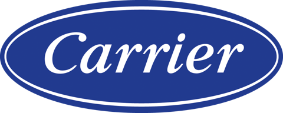
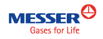
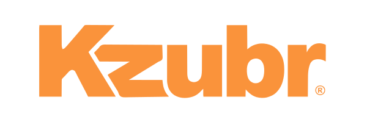
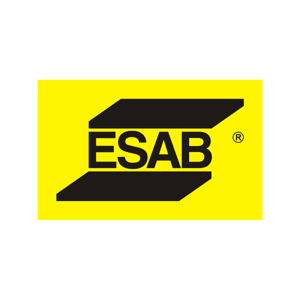
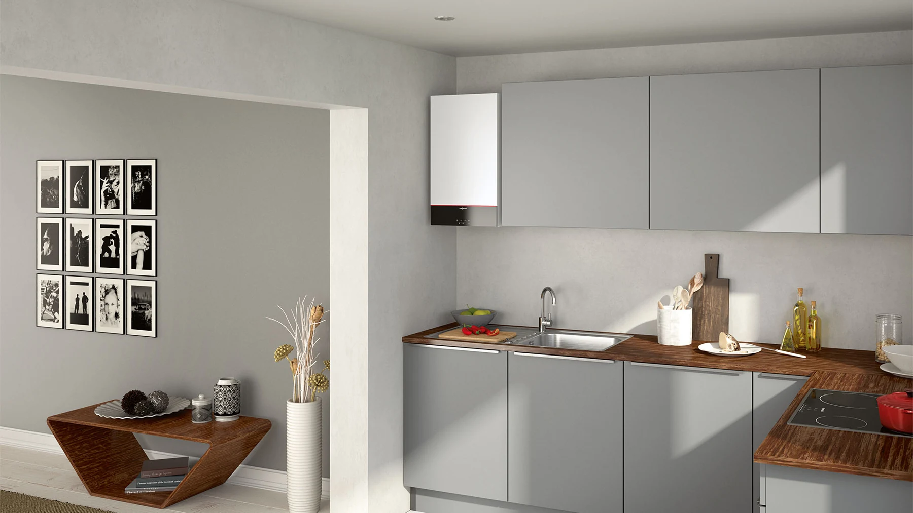
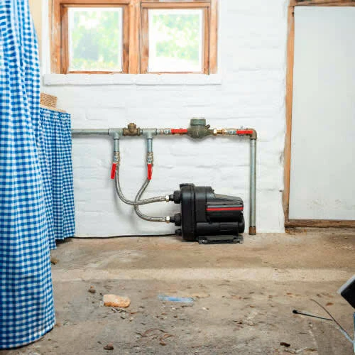
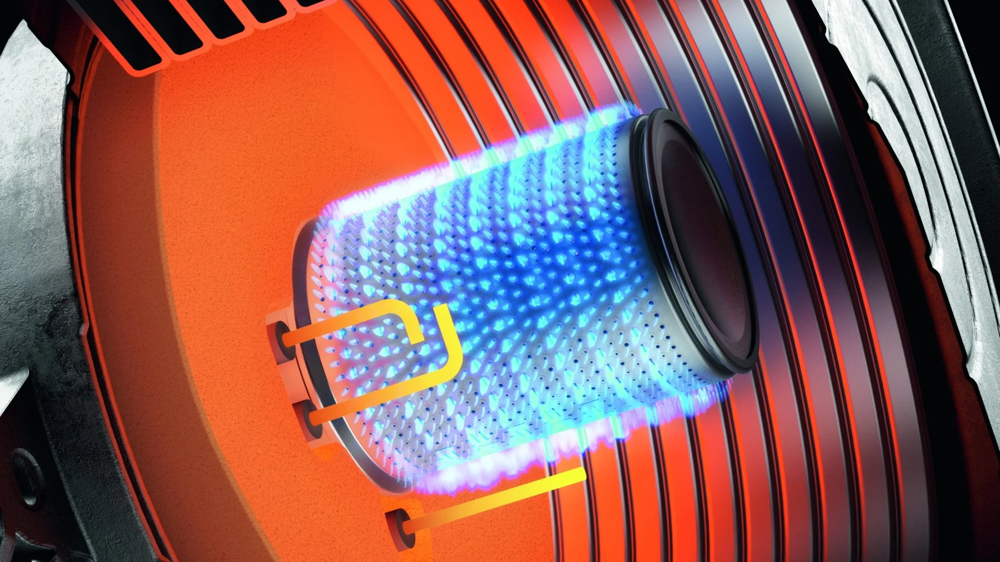
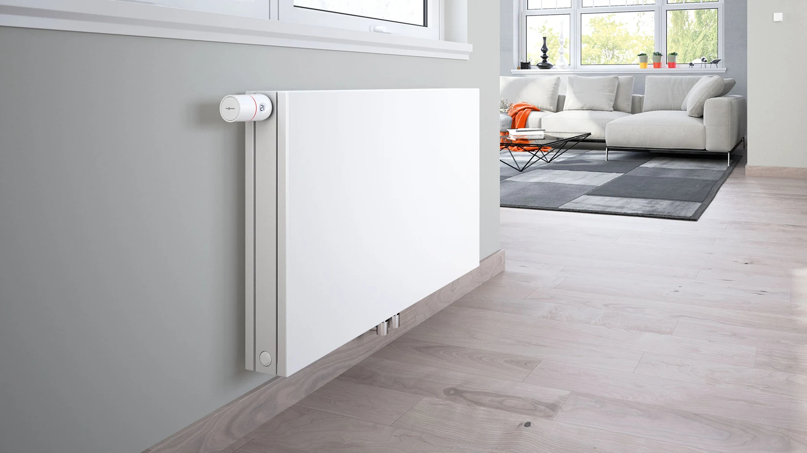

Viessmann
Vitocal 200-S
Toplotna pumpa vazduh-voda.
Karakteristike uređaja






01 / OPREMA I USLUGE
Od klimatizacije objekata do industrijskog programa. Istražite oblasti našeg poslovanja.
Oprema za sisteme grejanja i hlađenja.

Klimatizacija stambenih i poslovnih prostora.

Kotlovi i prateća oprema za grejne instalacije.

Oprema za snabdevanje i transport vode.

Tehnički gasovi i oprema za industrijske procese.

Materijal, pribor i oprema za rashladnu tehniku.

Projektovanje i ugradnja gasnih instalacija.

Ugradnja sistema centralnog grejanja.
VIESSMANN / EFIKASNOST U BROJEVIMA
Vitocal 200-S, tip 201.D08: COP 4,7 pri A7/W35. Za 100 kWh toplote, proračunata potrošnja uređaja je oko 21,3 kWh električne energije.
Pogledaj uređajELEKTRIČNA ENERGIJA ZA 100 kWh TOPLOTE
manje električne energije
u prikazanom poređenju
02 / TEHNOLOGIJE
Viessmann
Toplotna pumpa vazduh-voda.
Karakteristike uređaja
Viessmann
Zidni split sistem za klimatizaciju.
Karakteristike uređaja
Viessmann
Zidni gasni kondenzacioni kotao.
Karakteristike uređaja
Grundfos
Kompaktan sistem za podizanje pritiska vode.
Karakteristike uređaja03 / REŠENJA I PRIMENA
Nova zgrada, obnova grejanja ili poslovni prostor: dobar izbor počinje razumevanjem potreba i postojećih instalacija.

Izvor toplote, razvod, akumulacija i regulacija rade kao celina. Proverite kako se nova oprema uklapa u ostatak instalacije.
Upoznajte sistemski pristup
04 / ZELENI PROGRAM
ENERGETSKA EFIKASNOST I FINANSIRANJESaznajte više o sistemima grejanja i hlađenja koji doprinose energetskoj efikasnosti, kao i o mogućnostima finansiranja kroz GEFF program EBRD-a.
Upoznajte zeleni programPočnite od Tehnološkog selektora i uslova prihvatljivosti.
Predračun i dokumenta proverite sa partnerskom finansijskom institucijom.
Sačuvajte račune i dokaze koje program zahteva.
05 / O KOMPANIJI
INKOM DOO je kompanija iz Veternika, osnovana 1992. godine, koja se bavi distribucijom opreme za grejanje, hlađenje, gasne instalacije i industriju.
Asortiman povezuje opremu za objekte sa industrijskim programom - od toplotnih pumpi i klimatizacije do tehničkih gasova i opreme za zavarivanje.
Pronađite nas u Veterniku06 / KORISNE INFORMACIJE
Odgovori na pitanja o izboru opreme, energetskoj efikasnosti i mogućnostima ugradnje.
Toplotne pumpe koriste energiju iz vazduha, zemlje ili vode za grejanje objekata. Pojedini sistemi omogućavaju i hlađenje.
Saznajte kako radeOdređeni sistemi omogućavaju i hlađenje. Potrebno je proveriti funkcije izabranog modela i da li su razvod i ostale komponente prilagođeni takvom radu.
Više o tehnologiji →Ušteda zavisi od objekta, izolacije, režima rada, temperatura sistema i troškova energenata. Jedan procenat se ne može primeniti na svaki projekat.
Pripremite podatke o površini, izolaciji, staklenim površinama, nameni i broju korisnika prostora. Zatim uporedite karakteristike konkretnih modela za potrebni režim rada.
Pregled pitanja za izbor →Usluge obuhvataju projektovanje i ugradnju gasnih instalacija i ugradnju centralnog grejanja. Javite nam se sa informacijama o vašem objektu.
Pregled usluga →Informacije proverite na zvaničnom GEFF sajtu i kod partnerske finansijske institucije. Prihvatljivost opreme i kreditna odluka su zasebne provere.
Pročitajte GEFF vodič →07 / KONTAKT
Kontaktirajte nas za informacije o dostupnosti, cenama i karakteristikama opreme iz naše ponude.
Pošaljite upitProverite radno vreme telefonom pre dolaska.